Rules:
Image must reach research grade on iNaturalist.
Favorite photo for each species.
| No. | Species | Image Sample | Image Date | Image Location |
|---|---|---|---|
| American Coot | 14 November 2023 | Clarence Cannon NWR Missouri, USA |
|
| American Crow |

|
2 January 2024 | Weldon Spring Missouri, USA |
| American Goldfinch | 6 November 2023 | Weldon Spring Site Missouri, USA |
|
| American Kestrel | 6 December 2023 | Creve Coeur Lake Missouri, USA |
|
| American Robin | 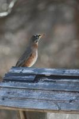 | 2 January 2023 | Wentzville Missouri, USA |
| American Tree Sparrow | 12 December 2023 | Winfield Lock & Dam Missouri, USA |
|
| American Wigeon | 22 November 2023 | Creve Coeur Lake Missouri, USA |
|
| Bald Eagle | 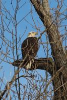 | 15 December 2023 | Lincoln Shields Recreation Area Missouri, USA |
| Barn Swallow |

|
20 June 2023 | Pine Grove Furnace Pennsylvania, USA |
| Belted Kingfisher | 26 October 2023 | Quail Ridge Park Wentzville Missouri, USA |
|
| Black Vulture | 10 December, 2022 | Huntington Square Columbia Maryland, USA |
|
| Blue Jay | 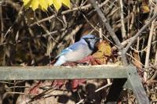 | 7 December 2023 | Busch Wildlife Missouri, USA |
| Bonaparte's Gull |

|
30 October 2023 | Creve Coeur Lake Missouri, USA |
| Boreal Chickadee | 19 August 2023 | Wildcat Ridge White Mountain National Forest New Hampshire, USA |
|
| Brown Creeper | 3 December 2023 | Quail Ridge Park Wentzville Missouri, USA |
|
| Brown-headed Cowbird | 1 November 2023 | Broemmelsiek Park Missouri, USA |
|
| Cackling Goose | 2 November 2023 | Riverlands Missouri, USA |
|
| Canada Goose | 7 May 2023 | Damascus Virginia, USA |
|
| Canada Jay | 19 August 2023 | Wildcat Mountain White Mountain National Forest New Hampshire, USA |
|
| Cape May Warbler | 19 August 2023 | Carter Notch Hut White Mountain National Forest New Hampshire, USA |
|
| Carolina Wren | 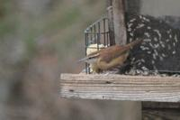 | 5 January 2024 | Wentzville Missouri, USA |
| Cedar Waxwing | 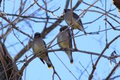 | 3 December 2023 | Quail Ridge Park Wentzville Missouri, USA |
| Chipping Sparrow | 20 June 2023 | Pine Grove Furnace Pennsylvania, USA |
|
| Common Grackle | 14 November 2023 | Clarence Cannon NWR Missouri, USA |
|
| Common Ground Dove | 2 January 2024 | Weldon Spring Missouri, USA |
|
| Common Loon | 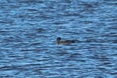 | 15 December 2023 | Riverlands Missouri, USA |
| Common Raven | 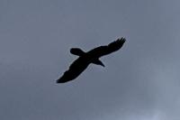 | 1 May 2023 | Roan High Knob Appalachian Trail Tennessee, USA |
| Dark-eyed Junco | 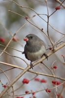 | 20 December 2023 | New Melle Missouri, USA |
| Double-crested Cormorant | 11 October 2023 | Assateague Island National Seashore Maryland, USA |
|
| Downy Woodpecker | 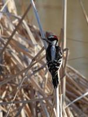 | 22 November 2023 | Creve Coeur Lake Missouri, USA |
| Eastern Bluebird | 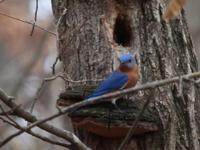 | 6 November 2023 | Busch Wildlife Missouri, USA |
| Eastern Towhee | 26 April 2023 | Big Bald Appalachian Trail Tennessee, USA |
|
| Eurasian Tree Sparrow | 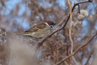 | 15 December 2023 | Riverlands Missouri, USA |
| European Robin | 27 August 2019 | Rowardennan Scotland, UK |
|
| European Starling | 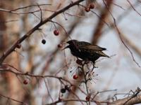 | 1 November 2023 | Broemmelsiek Park Missouri, USA |
| Field Sparrow | 1 November 2023 | Broemmelsiek Park Missouri, USA |
|
| Fox Sparrow | 22 November 2023 | Creve Coeur Lake Missouri, USA |
|
| Gadwall | 15 December 2023 | Riverlands Missouri, USA |
|
| Gray Catbird |

|
30 September 2023 | Columbia Maryland, USA |
| Graylag Goose | 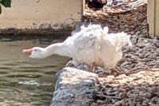 | 3 June 2023 | Gypsy Hill Park Staunton Virginia, USA |
| Great Black-backed Gull | 11 October 2023 | Assateague Island National Seashore Maryland, USA |
|
| Great Blue Heron | 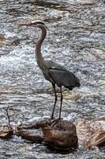 | 7 May 2023 | Damascus Virginia, USA |
| Great Egret | 11 October 2023 | Life of the Marsh Assateague Island National Seashore Maryland, USA |
|
| Great-tailed Grackle | 22 October 2023 | Fair Park Dallas Texas, USA |
|
| Greater White-fronted Goose | 2 November 2023 | Riverlands Missouri, USA |
|
| Green-winged Teal | 11 January 2024 | Riverlands Missouri, USA |
|
| Hairy Woodpecker |

|
22 November 2023 | Creve Coeur Lake Missouri, USA |
| Herring Gull | 3 July 2017 | Snowdon/Yr Wyddfa Wales, UK |
|
| Hooded Merganser | 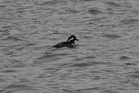 | 5 December 2023 | Busch Wildlife Missouri, USA |
| Horned Grebe | 2 November 2023 | Riverlands Missouri, USA |
|
| Horned Lark | 14 November 2023 | Clarence Cannon NWR Missouri, USA |
|
| House Finch | 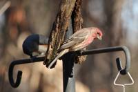 | 7 December 2023 | Busch Wildlife Missouri, USA |
| House Sparrow | 11 November 2023 | 370 Lakeside Park Missouri, USA |
|
| Indigo Bunting |

|
5 June 2023 | Blackrock Summit Shenandoah National Park Virginia, USA |
| Killdeer | 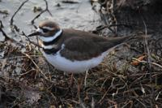 | 19 December 2023 | Broemmelsiek Park Missouri, USA |
| Laughing Gull | 11 October 2023 | Assateague Island National Seashore Maryland, USA |
|
| Least Sandpiper | 12 December 2023 | Winfield Lock & Dam Missouri, USA |
|
| Limpkin | 6 November 2023 | Busch Wildlife Missouri, USA |
|
| Mallard | 11 November 2023 | 370 Lakeside Park Missouri, USA |
|
| Mourning Dove | 6 December 2023 | Creve Coeur Lake Missouri, USA |
|
| Mute Swan | 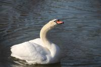 | 3 June 2023 | Gypsy Hill Park Staunton Virginia, USA |
| Northern Cardinal | 26 October 2023 | Quail Ridge Park Wentzville Missouri, USA |
|
| Northern Flicker | 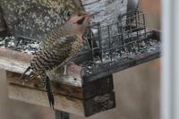 | 29 December 2023 | Wentzville Missouri, USA |
| Northern Harrier | 11 November 2023 | Riverlands Missouri, USA |
|
| Northern Mockingbird | 30 October 2023 | Creve Coeur Lake Missouri, USA |
|
| Northern Pintail | 14 November 2023 | Clarence Cannon NWR Missouri, USA |
|
| Northern Shoveler | 23 December 2023 | Clarence Cannon NWR Missouri, USA |
|
| Orange-crowned Warbler | 1 November 2023 | Broemmelsiek Park Missouri, USA |
|
| Peregrine Falcon | 13 December 2023 | Washington Missouri, USA |
|
| Pied-billed Grebe | 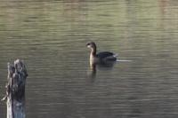 | 2 January 2024 | Weldon Spring Missouri, USA |
| Pileated Woodpecker | 23 December 2023 | Wentzville Missouri, USA |
|
| Purple Finch | 20 December 2023 | New Melle Missouri, USA |
|
| Red Crossbill | 11 May 2023 | Chatfield Shelter Appalachian Trail Virginia, USA |
|
| Red-bellied Woodpecker | 13 November 2023 | Mill Park Moscow Mills Missouri, USA |
|
| Red-headed Woodpecker | 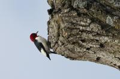 | 12 December 2023 | Winfield Lock & Dam Missouri, USA |
| Red-shouldered Hawk | 8 December 2023 | Wentzville Missouri, USA |
|
| Red-tailed Hawk | 11 November 2023 | Riverlands Missouri, USA |
|
| Red-winged Blackbird | 2 November 2023 | Riverlands Missouri, USA |
|
| Redhead | 2 November 2023 | Riverlands Missouri, USA |
|
| Ring-billed Gull | 2 November 2023 | Dresser Island Missouri, USA |
|
| Ring-necked Duck |

|
11 November 2023 | Riverlands Missouri, USA |
| Ring-necked Pheasant | 5 September 2020 | Yorkshire England, UK |
|
| Rock Pigeon | 15 September 2023 | Boston Massachusetts, USA |
|
| Ross's Goose | 2 November 2023 | Riverlands Missouri, USA |
|
| Ruby-crowned Kinglet | 1 November 2023 | Broemmelsiek Park Missouri, USA |
|
| Ruddy Duck | 2 November 2023 | Riverlands Missouri, USA |
|
| Rusty Blackbird | 22 November 2023 | Creve Coeur Lake Missouri, USA |
|
| Sanderling | 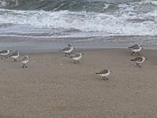 | 11 October 2023 | Assateague Island National Seashore Maryland, USA |
| Sandhill Crane | 23 December 2023 | Clarence Cannon NWR Missouri, USA |
|
| Savannah Sparrow | 12 December 2023 | Winfield Lock & Dam Missouri, USA |
|
| Scarlet Tanager | 7 June 2023 | Big Meadows Shenandoah National Park Virginia, USA |
|
| Scissor-tailed Flycatcher | 22 October 2023 | Village Creek Drying Beds Arlington Texas, USA |
|
| Short-eared Owl | 11 January 2024 | Riverlands Missouri, USA |
|
| Snow Goose | 23 December 2023 | Clarence Cannon NWR Missouri, USA |
|
| Song Sparrow | 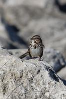 | 12 December 2023 | Winfield Lock & Dam Missouri, USA |
| Spotted Towhee | 7 December 2023 | Busch Wildlife Missouri, USA |
|
| Spruce Grouse | 22 August 2023 | Mount Success Appalachian Trail New Hampshire, USA |
|
| Swamp Sparrow | 22 November 2023 | Creve Coeur Lake Missouri, USA |
|
| Swan Goose | 3 June 2023 | Gypsy Hill Park Staunton Virginia, USA |
|
| Tree Swallow | 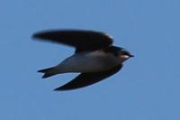 | 2 November 2023 | Riverlands Missouri, USA |
| Trumpeter Swan | 11 November 2023 | Riverlands Missouri, USA |
|
| Tufted Titmouse | 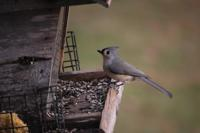 | 7 December 2023 | Wentzville Missouri, USA |
| Tundra Swan | 11 November 2023 | Riverlands Missouri, USA |
|
| Turkey Vulture | 26 October 2023 | Quail Ridge Park Wentzville Missouri, USA |
|
| White-breasted Nuthatch | 13 November 2023 | Wentzville Missouri, USA |
|
| White-crowned Sparrow |

|
22 November 2023 | Creve Coeur Lake Missouri, USA |
| White-throated Sparrow | 22 November 2023 | Creve Coeur Lake Missouri, USA |
|
| White-winged Crossbill | 28 August 2023 | Saddleback Ridge Appalachian Trail Maine, USA |
|
| Wild Turkey | 12 October 2023 | Assateague Island National Seashore Maryland, USA |
|
| Wilson's Snipe | 12 December 2023 | Winfield Lock & Dam Missouri, USA |
|
| Wood Duck | 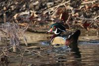 | 20 December 2023 | New Melle Missouri, USA |
| Yellow-bellied Sapsucker | 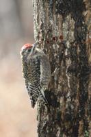 | 30 December 2023 | Wentzville Missouri, USA |
| Yellow-rumped Warbler | 6 November 2023 | Busch Wildlife Missouri, USA |
Rules:
Sound must be identified by Merlin. That's it.
(If Merlin is wrong then I will be wrong as well!)
First sound recording for each species despite quality.
Sound recordings may contain (and be used for) multiple species.
Listed species might not be most prominent in recording.
| No. | Species | Sound Sample | Sound Date | Sound Location |
|---|---|---|---|---|
| Acadian Flycatcher | 29 April 2023 | Tennessee, USA | ||
| American Crow | 14 April 2023 | Tennessee, USA | ||
| American Goldfinch | 2 May 2023 | North Carolina, USA | ||
| American Goshawk | 23 July 2023 | Massachusetts, USA | ||
| American Kestrel | 20 October 2023 | Louisiana, USA | ||
| American Pipit | 14 November 2023 | Missouri, USA | ||
| American Redstart | 11 April 2023 | North Carolina, USA | ||
| American Robin | 17 April 2023 | North Carolina, USA | ||
| American Tree Sparrow | 11 November 2023 | Missouri, USA | ||
| Baltimore Oriole | 23 April 2023 | North Carolina, USA | ||
| Barn Swallow | 7 May 2023 | Virginia, USA | ||
| Barred Owl | 9 April 2023 | North Carolina, USA | ||
| Belted Kingfisher | 26 October 2023 | Missouri, USA | ||
| Black-and-white Warbler | 11 April 2023 | North Carolina, USA | ||
| Black-billed Cuckoo | 26 April 2023 | Tennessee, USA | ||
| Black-capped Chickadee | 12 April 2023 | Tennessee, USA | ||
| Black-throated Blue Warbler | 18 April 2023 | North Carolina, USA | ||
| Black-throated Green Warbler | 16 April 2023 | North Carolina, USA | ||
| Blackburnian Warbler | 11 April 2023 | North Carolina, USA | ||
| Blue Jay | 17 April 2023 | North Carolina, USA | ||
| Blue-gray Gnatcatcher | 16 April 2023 | Tennessee, USA | ||
| Blue-headed Vireo | 9 April 2023 | North Carolina, USA | ||
| Boat-tailed Grackle | 12 October 2023 | Maryland, USA | ||
| Boreal Chickadee | 13 August 2023 | New Hampshire, USA | ||
| Broad-winged Hawk | 7 May 2023 | Virginia, USA | ||
| Brown Creeper | 25 April 2023 | Tennessee, USA | ||
| Brown Thrasher | 9 May 2023 | Virginia, USA | ||
| Brown-headed Cowbird | 12 June 2023 | Virginia, USA | ||
| Cackling Goose | 23 December 2023 | Missouri, USA | ||
| Canada Goose | 29 April 2023 | Tennessee, USA | ||
| Canada Warbler | 9 May 2023 | Virginia, USA | ||
| Cape May Warbler | 13 August 2023 | Maine, USA | ||
| Carolina Chickadee | 9 April 2023 | North Carolina, USA | ||
| Carolina Wren | 18 April 2023 | North Carolina, USA | ||
| Caspian Tern | 11 October 2023 | Maryland, USA | ||
| Cedar Waxwing | 26 June 2023 | Pennsylvania, USA | ||
| Cerulean Warbler | 30 May 2023 | Virginia, USA | ||
| Chestnut-sided Warbler | 26 April 2023 | Tennessee, USA | ||
| Chimney Swift | 28 April 2023 | Tennessee, USA | ||
| Chipping Sparrow | 11 May 2023 | Virginia, USA | ||
| Common Grackle | 19 April 2023 | North Carolina, USA | ||
| Common Loon | 28 July 2023 | Vermont, USA | ||
| Common Raven | 15 April 2023 | Tennessee, USA | ||
| Common Yellowthroat | 2 May 2023 | North Carolina, USA | ||
| Cooper's Hawk | 5 January 2024 | Missouri, USA | ||
| Dark-eyed Junco | 12 April 2023 | Tennessee, USA | ||
| Downy Woodpecker | 5 May 2023 | Tennessee, USA | ||
| Eastern Bluebird | 1 May 2023 | North Carolina, USA | ||
| Eastern Kingbird | 7 May 2023 | Virginia, USA | ||
| Eastern Phoebe | 18 April 2023 | North Carolina, USA | ||
| Eastern Towhee | 9 April 2023 | North Carolina, USA | ||
| Eastern Whip-poor-will | 4 May 2023 | Tennessee, USA | ||
| Eastern Wood-Pewee | 4 May 2023 | Tennessee, USA | ||
| European Starling | 7 May 2023 | Virginia, USA | ||
| Evening Grosbeak | 3 May 2023 | Tennessee, USA | ||
| Field Sparrow | 12 May 2023 | Virginia, USA | ||
| Fish Crow | 21 April 2023 | North Carolina, USA | ||
| Fox Sparrow | 2 November 2023 | Missouri, USA | ||
| Gadwall | 23 December 2023 | Missouri, USA | ||
| Golden-crowned Kinglet | 13 April 2023 | Tennessee, USA | ||
| Golden-winged Warbler | 13 May 2023 | Virginia, USA | ||
| Gray Catbird | 29 April 2023 | North Carolina, USA | ||
| Great Blue Heron | 25 June 2023 | Pennsylvania, USA | ||
| Great Crested Flycatcher | 13 May 2023 | Virginia, USA | ||
| Great-tailed Grackle | 21 October 2023 | Texas, USA | ||
| Greater White-fronted Goose | 11 November 2023 | Missouri, USA | ||
| Greater Yellowlegs | 22 October 2023 | Texas, USA | ||
| Green Heron | 30 May 2023 | Virginia, USA | ||
| Green-winged Teal | 11 January 2024 | Missouri, USA | ||
| Hairy Woodpecker | 1 May 2023 | Tennessee, USA | ||
| Hermit Thrush | 25 April 2023 | Tennessee, USA | ||
| Herring Gull | 26 June 2023 | Pennsylvania, USA | ||
| Hooded Warbler | 16 April 2023 | North Carolina, USA | ||
| Horned Lark | 11 November 2023 | Missouri, USA | ||
| House Finch | 13 June 2023 | West Virginia, USA | ||
| House Sparrow | 19 April 2023 | North Carolina, USA | ||
| House Wren | 2 May 2023 | North Carolina, USA | ||
| Indigo Bunting | 29 April 2023 | Tennessee, USA | ||
| Kentucky Warbler | 10 June 2023 | Virginia, USA | ||
| Killdeer | 22 June 2023 | Pennsylvania, USA | ||
| Lapland Longspur | 11 November 2023 | Missouri, USA | ||
| Least Flycatcher | 26 April 2023 | Tennessee, USA | ||
| LeConte's Sparrow | 11 November 2023 | Missouri, USA | ||
| Louisiana Waterthrush | 11 May 2023 | Virginia, USA | ||
| Mallard | 7 May 2023 | Virginia, USA | ||
| Mourning Dove | 3 May 2023 | Tennessee, USA | ||
| Northern Cardinal | 19 April 2023 | North Carolina, USA | ||
| Northern Flicker | 5 May 2023 | Tennessee, USA | ||
| Northern Mockingbird | 5 May 2023 | Tennessee, USA | ||
| Northern Parula | 8 April 2023 | North Carolina, USA | ||
| Northern Pintail | 23 December 2023 | Missouri, USA | ||
| Osprey | 11 October 2023 | Maryland, USA | ||
| Ovenbird | 9 April 2023 | North Carolina, USA | ||
| Peregrine Falcon | 13 June 2023 | Maryland, USA | ||
| Philadelphia Vireo | 29 April 2023 | Tennessee, USA | ||
| Pied-billed_Grebe | 7 July 2023 | New Jersey, USA | ||
| Pileated Woodpecker | 4 May 2023 | Tennessee, USA | ||
| Pine Siskin | 2 May 2023 | North Carolina, USA | ||
| Pine Warbler | 7 June 2023 | Virginia, USA | ||
| Prairie Warbler | 30 June 2023 | Pennsylvania, USA | ||
| Purple Finch | 2 November 2023 | Missouri, USA | ||
| Red-bellied Woodpecker | 11 April 2023 | North Carolina, USA | ||
| Red-breasted Nuthatch | 26 April 2023 | North Carolina, USA | ||
| Red-eyed Vireo | 23 April 2023 | North Carolina, USA | ||
| Red-headed Woodpecker | 12 December 2023 | Missouri, USA | ||
| Red-shouldered Hawk | 16 April 2023 | North Carolina, USA | ||
| Red-tailed Hawk | 23 May 2023 | Virginia, USA | ||
| Red-winged Blackbird | 26 April 2023 | North Carolina, USA | ||
| Ring-billed Gull | 15 December 2023 | Missouri, USA | ||
| Rose-breasted Grosbeak | 12 April 2023 | North Carolina, USA | ||
| Royal Tern | 11 October 2023 | Maryland, USA | ||
| Ruby-crowned Kinglet | 17 April 2023 | North Carolina, USA | ||
| Ruffed Grouse | 17 May 2023 | Virginia, USA | ||
| Savannah Sparrow | 11 November 2023 | Missouri, USA | ||
| Scarlet Tanager | 25 April 2023 | North Carolina, USA | ||
| Snow Goose | 23 December 2023 | Missouri, USA | ||
| Song Sparrow | 19 April 2023 | North Carolina, USA | ||
| Swainson's Thrush | 26 July 2023 | Vermont, USA | ||
| Swamp Sparrow | 7 July 2023 | New Jersey, USA | ||
| Tennessee Warbler | 5 May 2023 | Tennessee, USA | ||
| Tree Swallow | 22 April 2023 | North Carolina, USA | ||
| Trumpeter Swan | 11 November 2023 | Missouri, USA | ||
| Tufted Titmouse | 8 April 2023 | North Carolina, USA | ||
| Upland Sandpiper | 29 April 2023 | Tennessee, USA | ||
| Veery | 29 April 2023 | North Carolina, USA | ||
| Vesper Sparrow | 11 November 2023 | Missouri, USA | ||
| Warbling Vireo | 7 May 2023 | Virginia, USA | ||
| White-breasted Nuthatch | 18 April 2023 | North Carolina, USA | ||
| White-crowned Sparrow | 2 November 2023 | Missouri, USA | ||
| White-eyed Vireo | 29 April 2023 | Tennessee, USA | ||
| White-throated Sparrow | 27 April 2023 | North Carolina, USA | ||
| White-winged Crossbill | 13 August 2023 | New Hampshire, USA | ||
| Wild Turkey | 3 July 2023 | Pennsylvania, USA | ||
| Winter Wren | 15 April 2023 | Tennessee, USA | ||
| Wood Duck | 14 June 2023 | Maryland, USA | ||
| Wood Thrush | 16 April 2023 | North Carolina, USA | ||
| Worm-eating Warbler | 15 April 2023 | North Carolina, USA | ||
| Yellow Warbler | 21 May 2023 | Virginia, USA | ||
| Yellow-bellied Sapsucker | 11 April 2023 | North Carolina, USA | ||
| Yellow-billed Cuckoo | 14 May 2023 | Virginia, USA | ||
| Yellow-breasted Chat | 10 June 2023 | Virginia, USA | ||
| Yellow-rumped Warbler | 17 April 2023 | North Carolina, USA | ||
| Yellow-throated Vireo | 9 April 2023 | North Carolina, USA | ||
| Yellow-throated Warbler | 8 April 2023 | North Carolina, USA |
{kind=link}
{kind=link}
{kind=link}
{kind=link}
{kind=link}
{kind=link}
{kind=link}
{kind=link}
{kind=link}
{kind=link}
{kind=link}
{kind=link}
{kind=link}
{kind=link}
{kind=link}
{kind=link}
{kind=link}
{kind=link}
{kind=link}
{kind=link}
{kind=link}
{kind=link}
{kind=link}
{kind=link}
{kind=link}
{kind=link}
{kind=link}
{kind=link}
{kind=link}
{kind=link}
{kind=link}
{kind=link}
{kind=link}
{kind=link}
{kind=link}
{kind=link}
{kind=link}
{kind=link}
{kind=link}
{kind=link}
{kind=link}
{kind=link}
{kind=link}
{kind=link}
{kind=link}
{kind=link}
{kind=link}
{kind=link}
{kind=link}
{kind=link}
{kind=link}
{kind=link}
{kind=link}
{kind=link}
{kind=link}
{kind=link}
{kind=link}
{kind=link}
{kind=link}
{kind=link}
{kind=link}
{kind=link}
{kind=link}
{kind=link}
{kind=link}
{kind=link}
{kind=link}
{kind=link}
{kind=link}
{kind=link}
{kind=link}
{kind=link}
{kind=link}
{kind=link}
{kind=link}
{kind=link}
{kind=link}
{kind=link}
{kind=link}
{kind=link}
{kind=link}
{kind=link}
{kind=link}
{kind=link}
{kind=link}
{kind=link}
{kind=link}
{kind=link}
{kind=link}
{kind=link}
{kind=link}
{kind=link}
{kind=link}
{kind=link}
{kind=link}
{kind=link}
{kind=link}
{kind=link}
{kind=link}
{kind=link}
{kind=link}
{kind=link}
{kind=link}
{kind=link}
{kind=link}